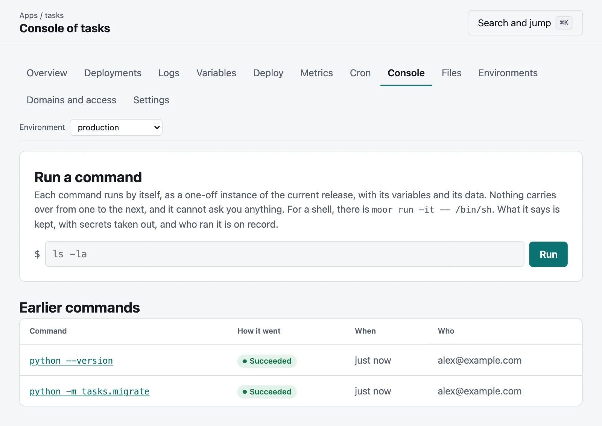
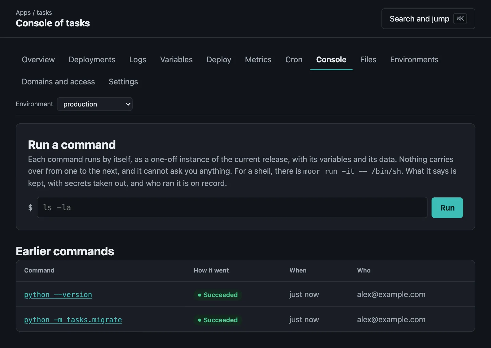
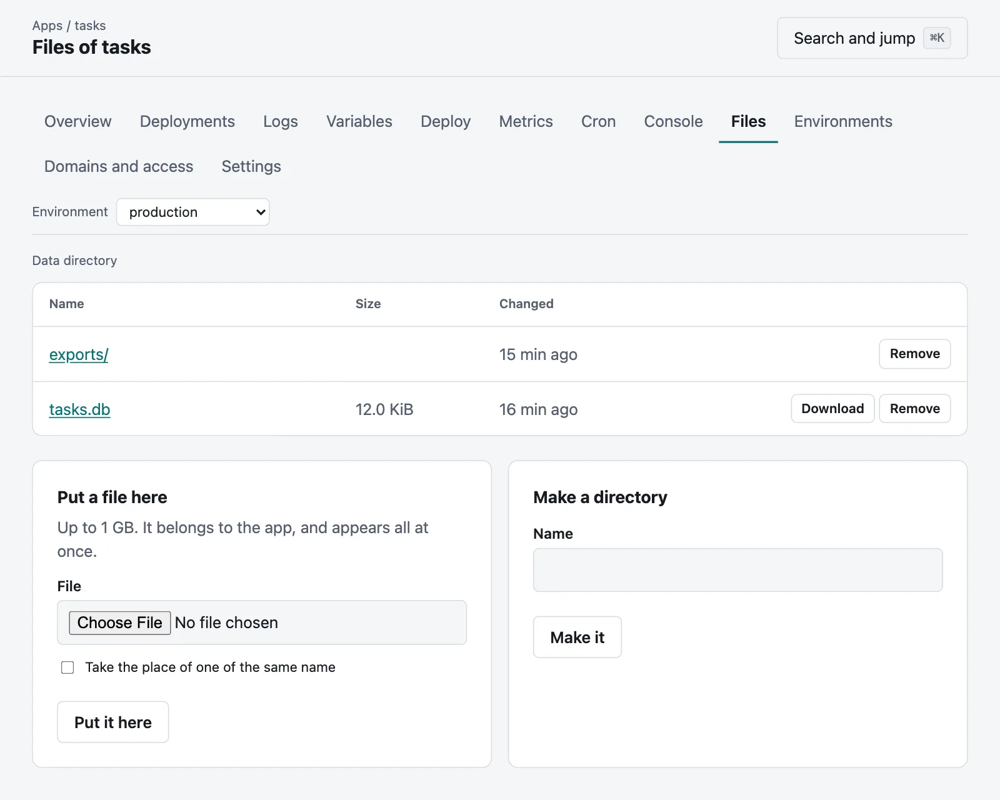
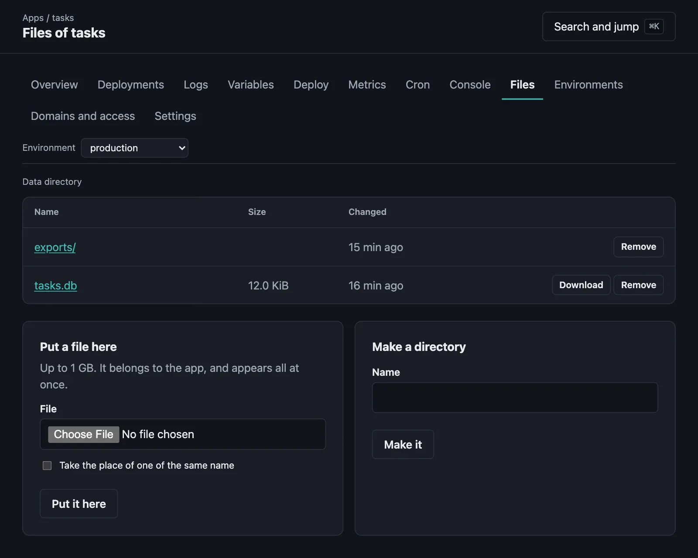

Getting into an app
A terminal, a console in the browser, and the data directory.
Three ways of reaching an environment by hand, from the command line and from the console.
| What it is | For | |
|---|---|---|
moor run -it | A terminal of your own, in a one-off instance | A shell, a database prompt, anything that asks you things |
moor exec | A command in a container that is running | Looking at what that container has |
| The Console tab | One command at a time, in a browser | When all you have is a browser |
moor files and the Files tab | The environment's data directory | Looking at, fetching and putting files |
All of them take being able to deploy to the app, as they can read what it keeps and act as it. Who started what, and who read which file, is in the audit log. What is done at a terminal after that is not.
A terminal#
moor run -it -- /bin/shThis starts a one-off instance of the current release, as moor run does, with its variables, its data directory, and its user and limits if the server keeps apps apart. You get a terminal of your own in it, the same size as yours, and it hears when yours changes size.
- All the keys go to what is running, Ctrl-C too. Leave as you would leave a shell. Losing the connection stops what was running, and all that it started that still has that terminal. Something that takes pains to leave it, such as a daemon, only goes with it where the server keeps apps apart with a cgroup.
- It takes an hour at the most, unless
--timeoutsays otherwise, up to a day. moorends with the command's own exit status.- What is said in it is not kept, since a password can be typed into one. There is a record that it happened, of who ran what and how it ended, in the app's runs.
- Unlike the output of
moor run, what a terminal shows has no secrets taken out. It would not be possible, and you could print them another way.
With -i alone there is no terminal, only standard input, for feeding something to a command:
moor run -i -- psql mydb < dump.sqlOn Windows, the terminal is a pseudo-console, and what it sends is understood by Windows Terminal and by anything else that understands the same escapes.
A terminal takes an API token, which moor login gets you. A session in a browser cannot start one: any page you visit could ask your browser to open one, and it would send your cookies.
Inside a running container#
A one-off instance is a new one. To see what a particular container has, give its instance, from moor ps:
moor exec ins_01J8Z3 -it -- /bin/shmoor exec ins_01J8Z3 -- ps auxA command that is more than plain words goes through /bin/sh in the container, so an image with no shell can only run plain commands. What is running there belongs to the container: leaving stops moor's side of it, and a container engine may let the command go on until it ends or the container does. An app that is not in a container has nothing of its own to go into, as a process sees the same files from anywhere, and moor exec says so: moor run has them, with its variables and its user.
The Console tab#
An app's Console tab, for those who can deploy to it, runs one command at a time and shows what it says as it says it. Each runs by itself: nothing carries over from one to the next, so a cd is forgotten, and it cannot ask you anything, as what it reads is empty. For those things, there is a terminal.


The up and down arrows go back through what has been run. What a command says is kept with its run, with secrets taken out, as it is for moor run.
The data directory#
Each environment has a data directory of its own, which is where its app keeps what it means to keep. An app's Files tab shows what is in it, with a preview of short text files, and can download, upload, make directories and remove. So can the command line:


moor filesmoor files uploads --env stagingmoor files get backups/nightly.sqlmoor files put seed.sqlmoor files mkdir importsmoor files put data.csv imports/data.csv --replacemoor files rm -r imports- What is put there belongs to the app, and appears all at once, so that the app never sees half of it. In a container, where its user could be anyone, anyone may change it. It stops at something already there, unless told otherwise. Up to 1 GB, or
moor run -ifor more. - Everything in there was written by an app, and is treated with that in mind. A link that leads out of the data directory is not followed, a pipe or a device is not opened, and someone else's file with another name elsewhere is not sent. A file is only ever sent as a download, and a preview is only ever text.
- Each of these is for an environment that is there: nothing can be put where an app of that name may find it later.
- Reading a file is in the audit log, as is anything that changes.
- There is no way back from removing something other than a backup.